Un anno dopo siamo di nuovo nel luogo del delitto.
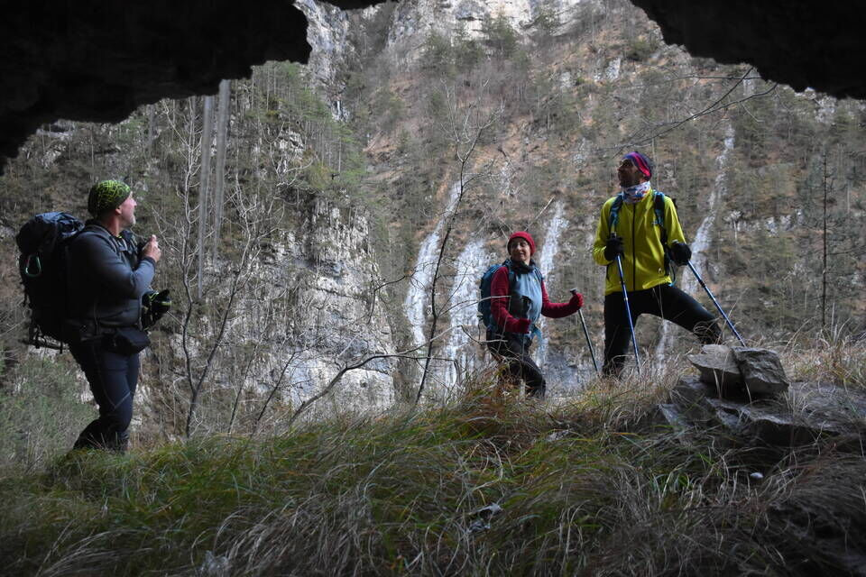Su per l'antica traccia dei clautani: difficile, esposto, spaventosamente ripido... da bestie!
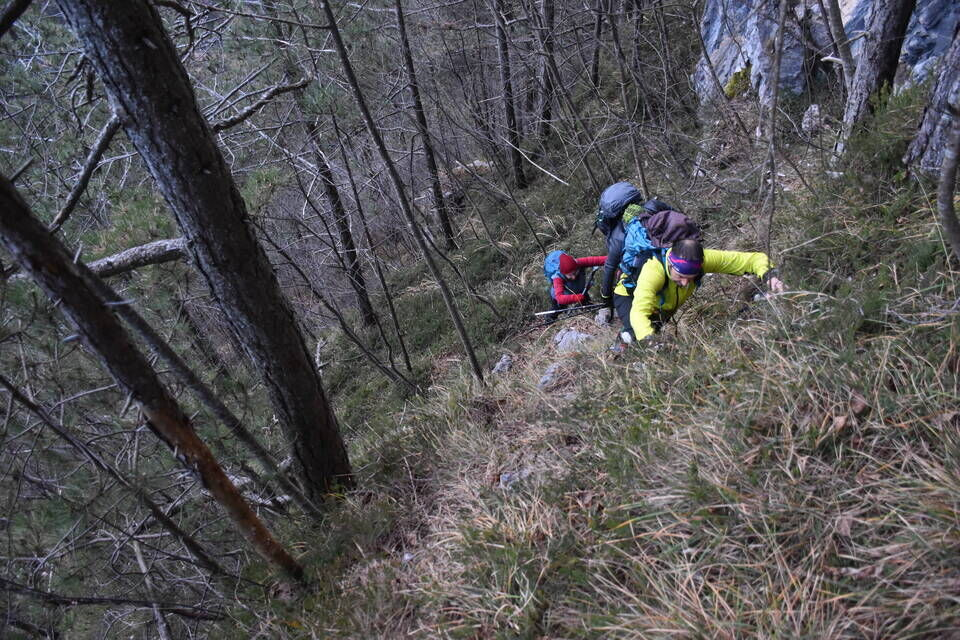Eppure il Bosc de Val era frequentato da cacciatori, pastori di capre, boscaioli e fienaiuoli (notizia Piero G.).
«Il bus "ripido/erto" de Bosc de Val era percorso da boscaioli e contadini, quest'ultimi, da testimonianze attendibili, scendevano con il fascio di fieno sulla schiena. Erano personaggi che non avevano bisogno di palestre perché la ginnastica era a portata di mano.»
Il ripidissimo versante dove si svolge il troi di Nuci (ex CAI 385), facente capo al tàmer de la Crous.
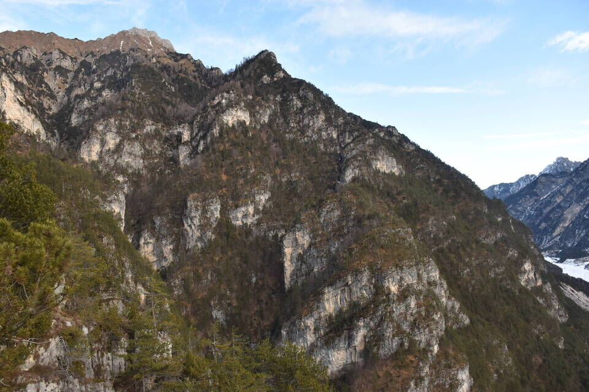Qualche strapiombetto fra loppe per allenare le braccia.
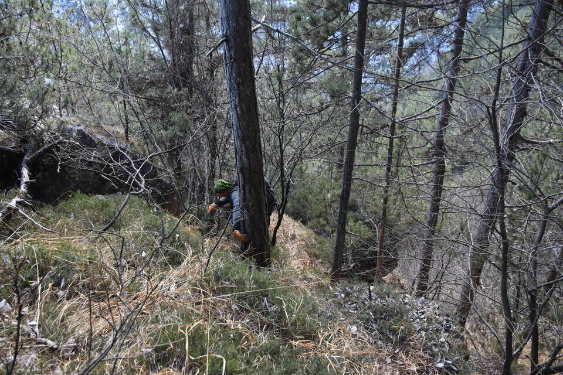Dalla cresta sommitale del Bosc de Val, arcigna e piena di mughi, la visuale è grandiosa: qui l'intrigante versante est della Punta del Borsàt, mentre a sx imbiancata la Cima dei Viéres. Da notare a dx il Forzèl Borsàt.
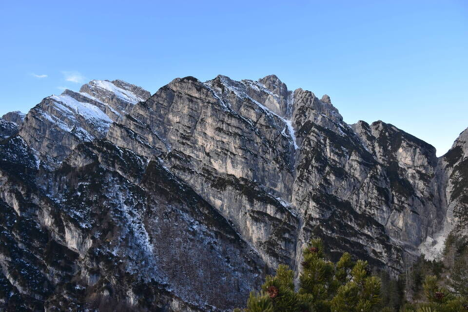Impressionante la mole selvaggia del Turlón. Eppure da qui le bestie continuano fino in cima, così come per cengia fino al Forzèl Borsàt.
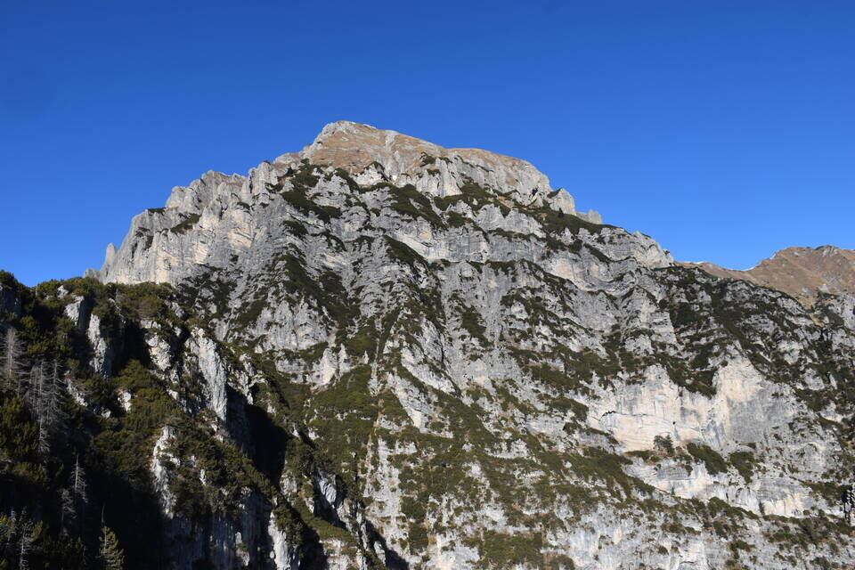Le Pale Candele, con ben evidente il tàmer de la Crous.

La bella cresta Cornaget - Frata de Barbìn.
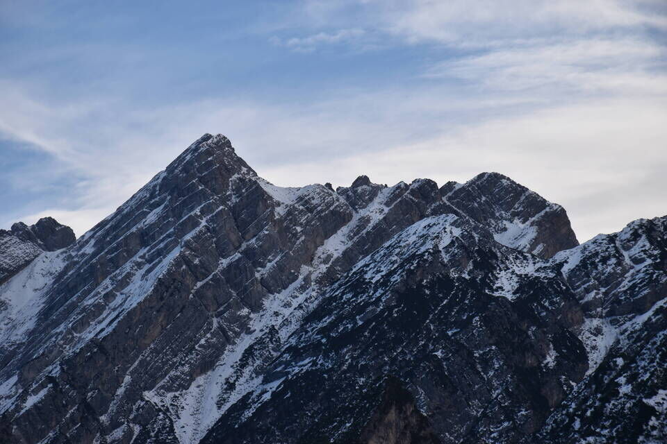Ci caliamo per il bosco di faggi del versante est (dove sulla carta Tabacco viene riportato «Bosc da Val»), e poco distanti dalla cresta con incredulità troviamo vecchi tronchi tagliati.
L'obiettivo è di traversare lungamente — a q1300 circa e nell'unico modo possibile — tutto il versante sud del Turlón fino ad arrivare all'ex CAI 385. Traversata molto suggestiva, sotto le grandi pareti gialle del monte.

Attraversiamo la testata della val de Stale, che, attenzione, non è quella segnata sulle carte IGM (e quindi Tabacco): si tratta di un errore cartografico. La val de Stale è quella compresa fra il Bosc de Val e il Turlón. Il dubbio che sia così me l'hanno fatto venire sia le parole di Salice (it. A al Turlón, guida Berti) «arrivati al vallone che precede la V. de Stale, su diritto e per pendio erboso e ripido in vetta, senza difficoltà», sia quelle di Piero G. durante una escursione «noi [clautani] quel bosco lo chiamiamo anche Bosc de Val de Stale». Ipotesi confermata anche da uno degli ultimi anziani di Claut conoscitori di questi luoghi, a cui Piero ha chiesto conferma.
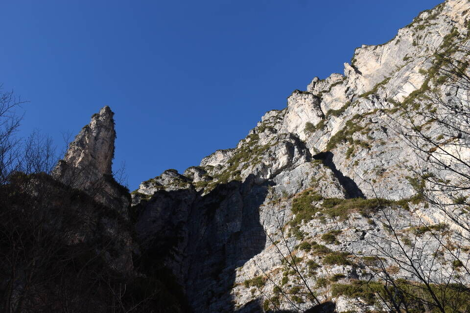La sorpresa più bella della giornata: una meraviglia.
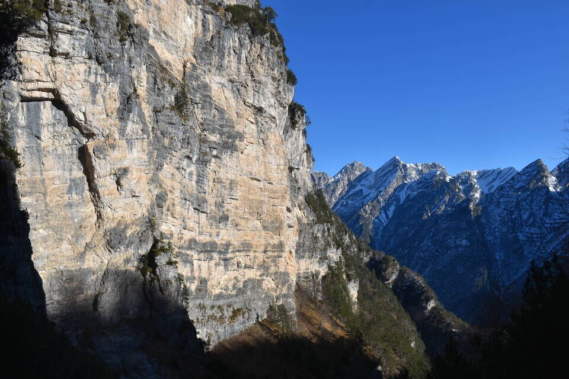Dal Cornaget alle Pale de Ciuone.
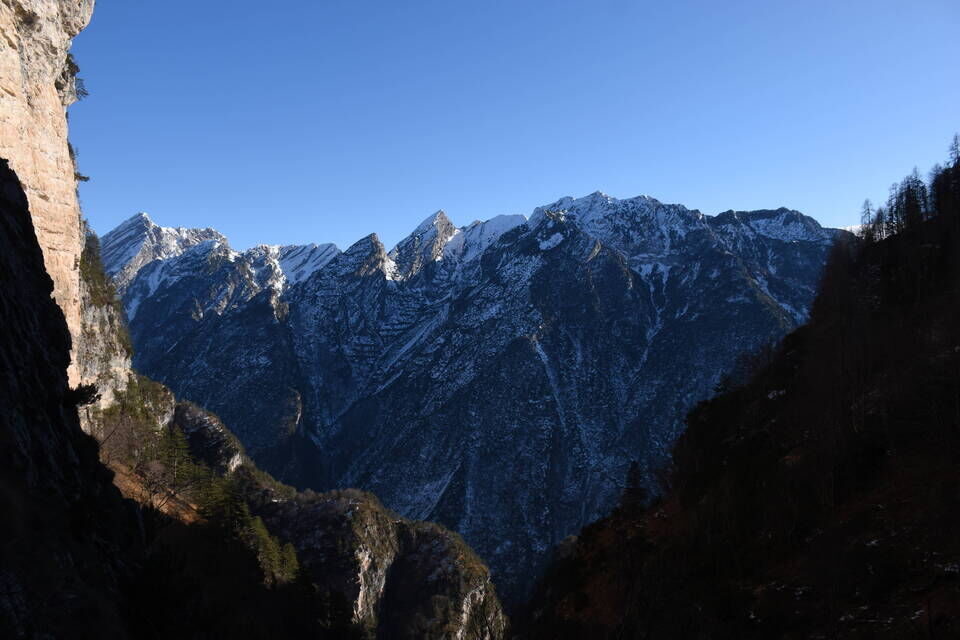 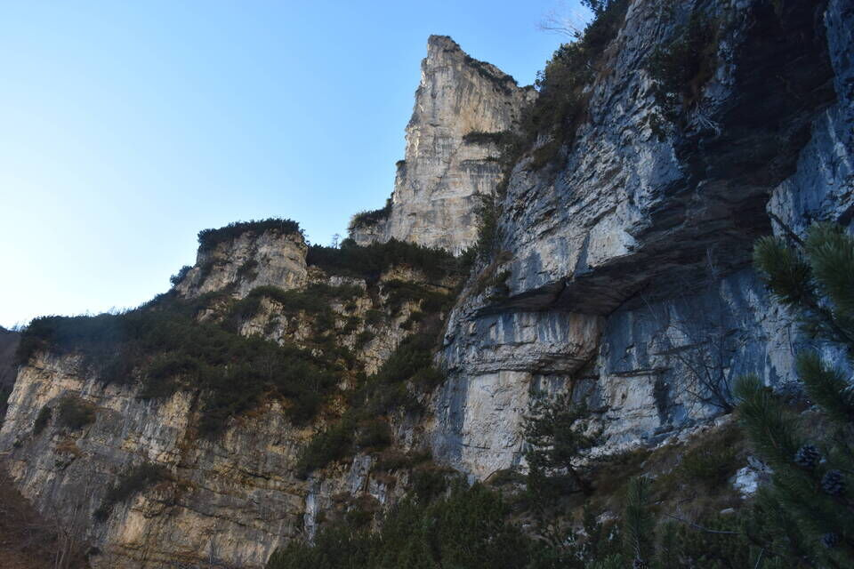 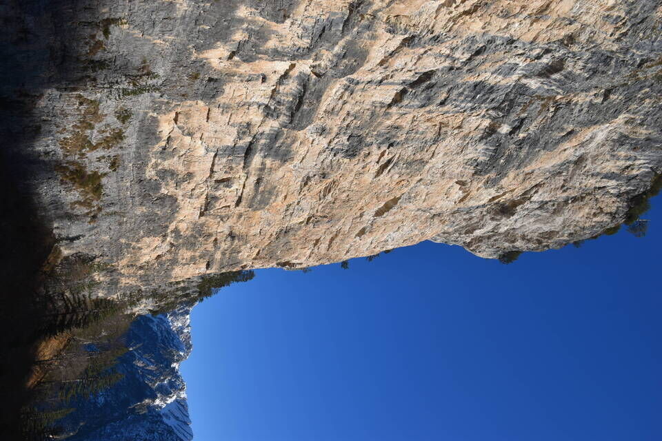 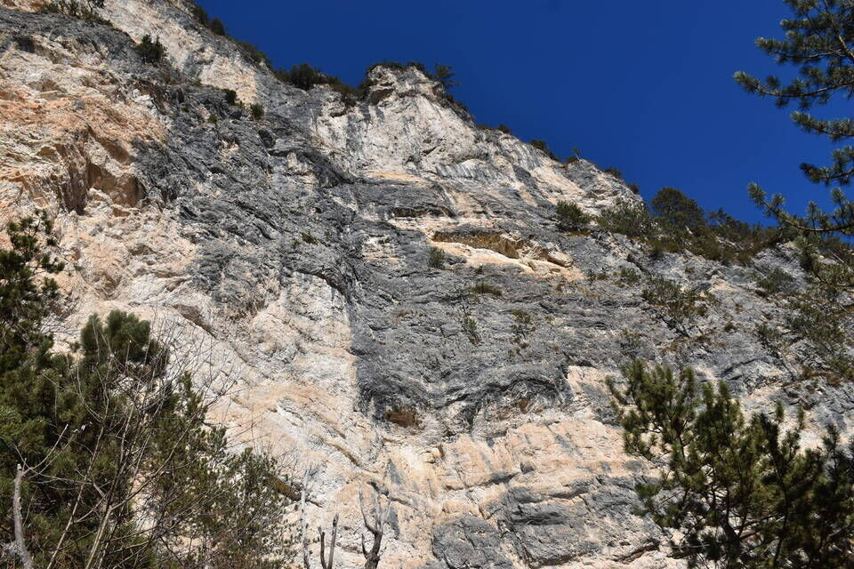Passiamo proprio sotto l'enorme salto del ciol Bevadór, e poi via ancora di traverso fino ad arrivare al troi di Nuci a metà fra Col di Vitór e Col di Barzàn.
Attenzione: anche qui c'è un errore cartografico! Il ciol Bevadór non è quello segnato sulle carte, bensì è la parte superiore del ciol di Nuci, e in particolare quello che origina dalla Forcella del Turlón; tutta la zona ad anfitreatro sotto-cresta è detta Bevadór. Sulle carte topografiche con ciol Bevadór viene erroneamente indicato il piccolo ciol, generalmente asciutto, che origina dai prati sotto Pale Candele e divide il Tamerùt dal Tàmer de la Crous; il vero nome di quel rio è ciolìt (piccolo ciol).
La famosa placca del troi di Nuci. Tale sentiero è un capolavoro per come riesce a superare le asperità del ripidissimo versante che sovrasta Stai de Nuci.
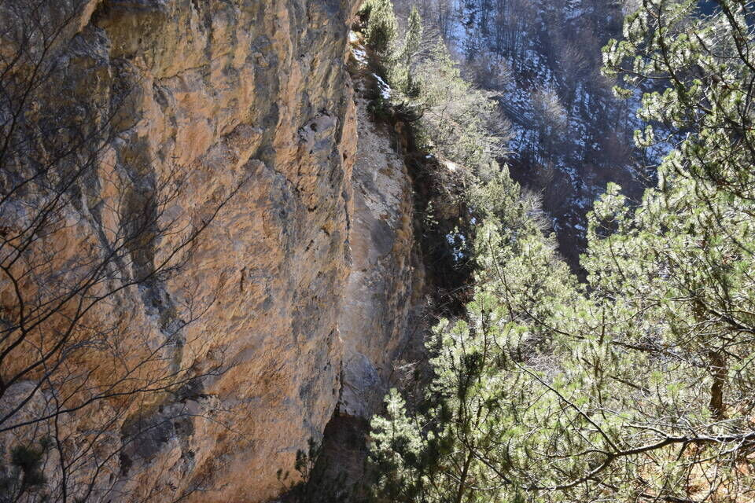Il trittico della val Piovìn.
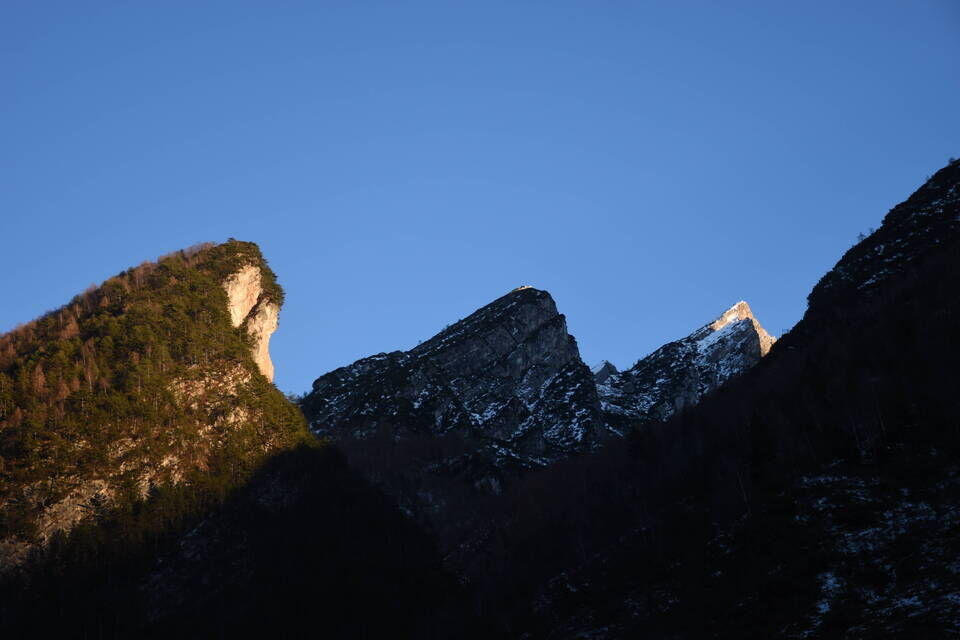Sempre bella luce per questo scatto su Cima Savalón.
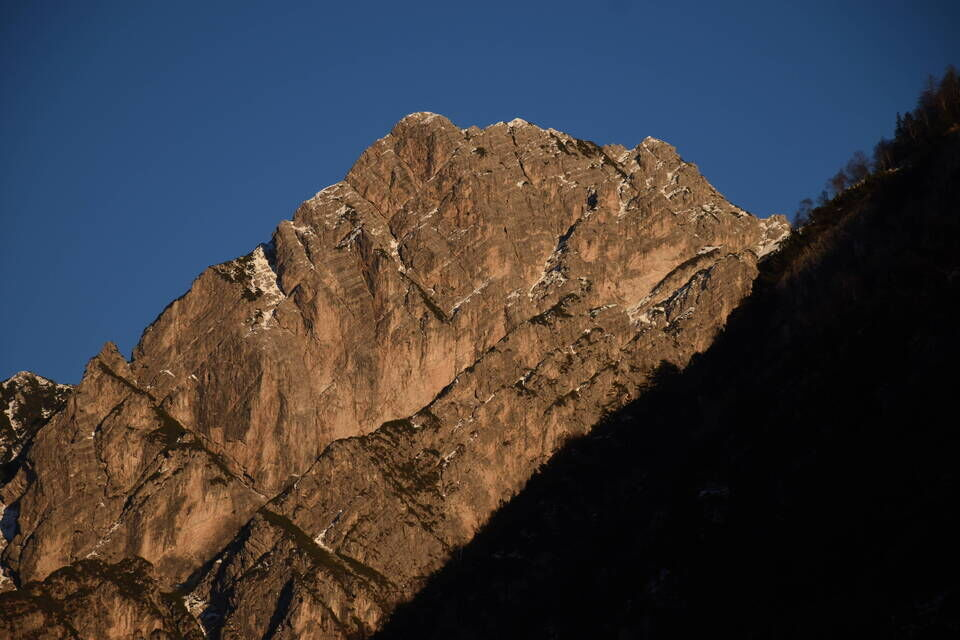